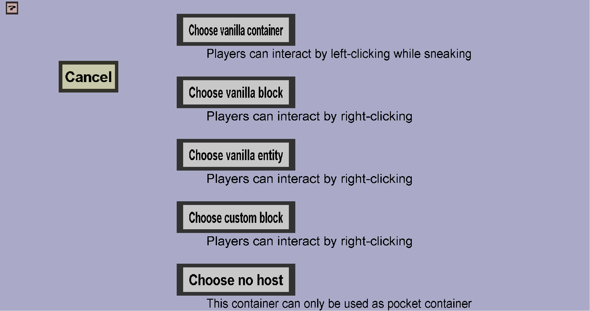

The container host selection menu can be used to choose the host block of a custom container. The host block determines how players can open the custom container. This menu should look like this:
Click the 'Cancel' button to go back to the container edit menu without selecting a new host block.
Click one of the other buttons to select a new host block. I believe the explanation on and below below each button should give enough information.